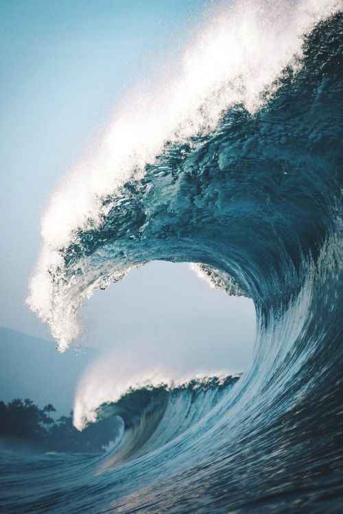

World Ocean
While there is only one global ocean, the vast body of water that covers 71 percent of the Earth is geographically divided into distinct named regions. The boundaries between these regions have evolved over time for a variety of historical, cultural, geographical, and scientific reasons.
Historically, there are four named ocean basins: the Atlantic, Pacific, Indian, and Arctic. However, most countries - including the United States - now recognize the Southern (Antarctic) as the fifth ocean basin. The Pacific, Atlantic, and Indian are the most commonly known.
The Southern Ocean is the 'newest' named ocean basin. It is recognized by the U.S. Board on Geographic Names as the body of water extending from the coast of Antarctica to the line of latitude at 60 degrees South. The boundaries of this ocean were proposed to the International Hydrographic Organization in 2000. However, not all countries agree on the proposed boundaries, so this has yet to be ratified by members of the IHO. The U.S. is a member of the IHO, represented by the NOS Office of Coast Survey.

Why the ocean is so important?
It helps us breathe
It helps regulate the climate
It helps regulate the climate
Its biodiversity is incredible
It creates millions of jobs
6 ways to help our ocean
- Help Take Care of the Beach
- Don't Purchase Items That Exploit Marine Life
- Use Fewer Plastic Products
- Stop using plastic straws, even in restaurants
- Use a reusable produce bag. A single plastic bag can take 1,000 years to degrade
- Support Organizations Working to Protect the Ocean
- The Ocean Conservancy
- Oceana
- Sea Shepherd Conservation Society.
- Be an Ocean-Friendly Pet Owner
- Use Your Job To Make A Change
item4
The ocean is a huge body of saltwater that covers about 71 percent of the Earth’s surface. The planet has one global ocean, though oceanographers and the nations of the world have divided it into distinct geographic regions: the Pacific, Atlantic, Indian, and Arctic oceans. In recent years, some oceanographers have determined that the seas around Antarctica deserve their own designation: the Southern Ocean.
Marine Debris – a Silent Killer.
Marine Debris is present in all marine habitats, from densely populated regions to remote points far from human activities, from beaches and shallow waters to the deep-ocean trenches. The amount of debris in the marine environment is a cause for concern. It is known to be harmful to marine life, it presents a hazard to shipping (propeller fouling), it is aesthetically detrimental, and it may also have the potential to transport contaminants over long distances.
Marine debris, and in particular the accumulation of plastic debris, has been international as a global problem alongside other contemporary key issues, such as climate change, ocean acidification and loss of biodiversity. Marine animals become entangled in debris, and even mistake it for food – often killing them. In the image below an endangered green turtle has been hooked and left to die in an abandoned fishing line.